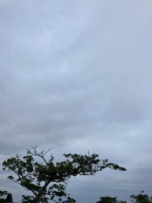
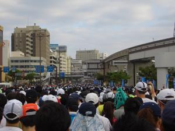
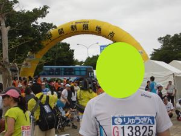
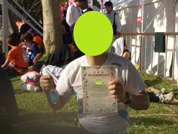

うるがいの話 ある日
最新: ナハマラソンの日【うるがいの話 ある日】とは 一日だけのプログです
『うるがいの話』の最新一日だけのプログで、通信料が少なく経済的だ。カニの画像をクリックすると全ての日付が載る『うるがいの話』サイトを表示します
|
|
【うるがいの話】 うるがい(ｳﾙｶﾞｲ urugai)とは、『もずくがに』の名前でとても大きくなります。 |
|---|---|
|
|
【カミマヤーの話】 猫のことを方言でマヤーといいます。カミマヤー（kamimayaa）とは、神の猫のことです。 |
|
【たながぁの音楽】 たながぁ（ﾀﾅｶﾞｰ tanagaa）とは手長えびのことで、何種類かあり大きいのは車 エビぐらいになります。 |

|
【ぶながぁの話】 ぶながぁ(ﾌﾞﾅｶﾞｰ bunagaa)とは、赤い髪の毛、赤い身体、そして身長は１ｍ２０ｃｍ ぐらい、川の蟹を食べているの目撃された。場所は沖縄県国頭郡大宜味村のと ある村僕の隣近所に住んでいる爺さんから、聞いた話です。 |
|
|
【ギーマの話】 ギーマ(giima)とは、山原の里山に咲くスズランに似た、 花を付けます。実は食べられます、 気が付くと口の周りが紫になっています。 |
2023年12月03日 (日）ナハマラソンの日
15:19

今年のＮＡＨＡマラソンは、暑くなるはずだからエントリー辞めた方がいいよ
とコドモに言ったが、そこそこの気温だった。ＮＡＨＡマラソンのネットでの
大会記録によると今回第３７回は、１９．０度（エントリー者数は２万１、１
４１人）である。私のナハマラソンの参加もマンネリ化した第２６回（２０１
０年）にデジカメをポーチに入れて、ランナー視線で写真を撮ったのがある。
その時の気温は、２１．７度（エントリー者数は２万６、４２５人）と比べて
もまずまずの気温だった。ついでに、その時の写真を載せることにする。
１．開始１０分後、たらたら歩いている、旭橋の歩道橋が正面にある

２．開始２８分後 国際通り、モノレールの牧志駅の近く

３．１１時５６分 中間地点地点にて

４．完走証（６時間１８秒）の完走証を持って

写真から頭は、黒々としていた。でも、お腹は既に出ている。
１５時１１分 ビットコインの総資産 ￥１６、７７８（↑２７６）